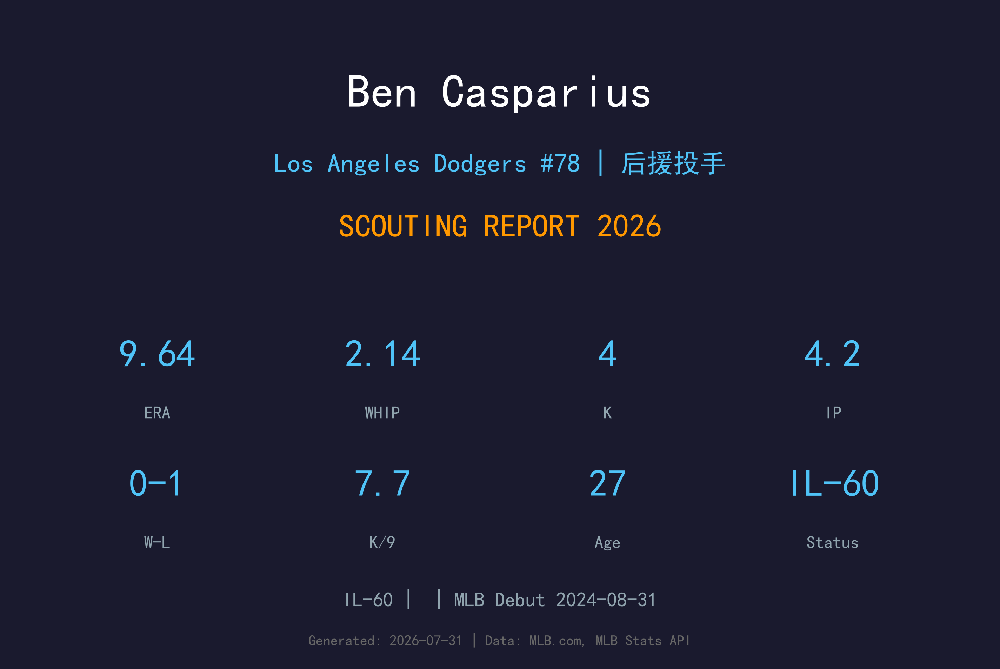
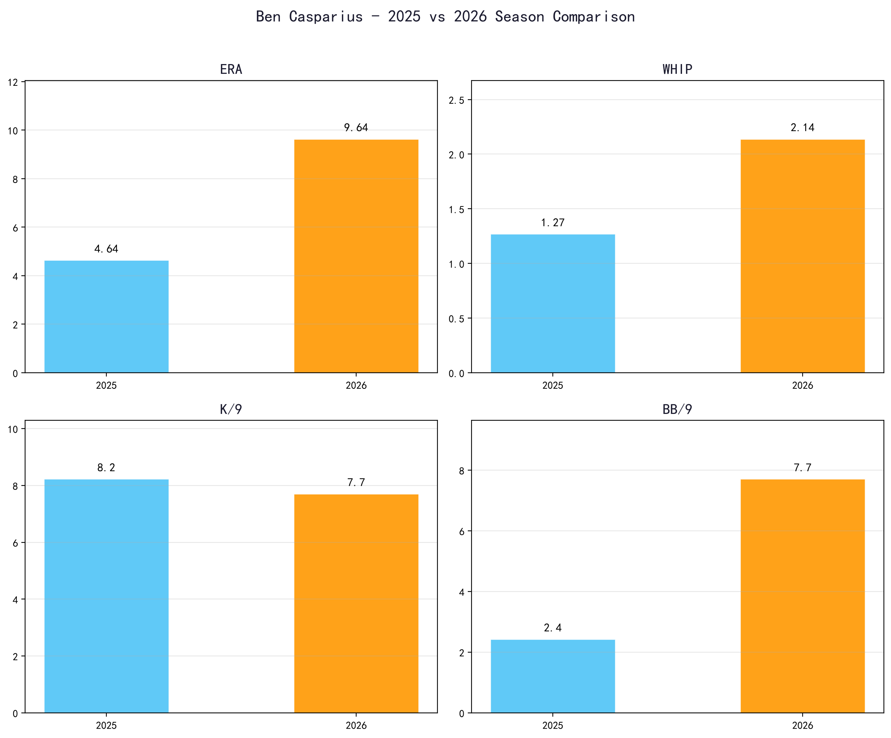
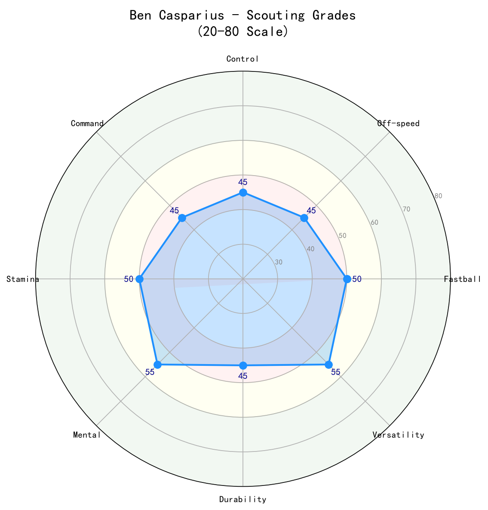

Los Angeles Dodgers #78 | 投手 | 伤病名单-60

Ben Casparius 是道奇自家农场培养的右投后援，以三振能力与拆弹专家角色著称。2026 年他仅出赛 5 场便进入 60 天伤病名单，留下 4.2 局、ERA 9.64 的极小样本。 Casparius 在 2024 年出道时展现不错的三振能力，但控球始终是他需要改善的课题。27 岁的他若能从 伤病名单-60 健康复出，仍有机会回到 布局（setup）/ 拆弹专家的角色。
Ben Casparius 于 2024-08-31 登上大联盟，开始在高水平舞台展现自己的实力。
Ben Casparius 目前因伤位于 伤病名单-60 名单。恢复后，他将重新回到道奇的投手阵容中。

📈 上图为近三年核心数据趋势。柱状图高度代表该年度表现，便于快速比较球员状态的上升或下滑。
该球种是该球员投球组合中的重要武器，详见上方评分与球速。
该球种是该球员投球组合中的重要武器，详见上方评分与球速。
该球种是该球员投球组合中的重要武器，详见上方评分与球速。
Casparius 是典型的高三振、高控球风险后援。他的 球威 足以在大联盟制造挥空，但 2026 年 BB/9 7.71 显示他在小样本下完全失去控球。伤病可能影响了他的 mechanics。若健康恢复，他有机会回到 2025 年 3.71 ERA 的水准。

| 项目 | 评分 (20-80) | 等级 |
|---|---|---|
| 速球 | 55 | B |
| 滑球 | 55 | B |
| 变速球 | 45 | C+ |
| 控球 | 40 | C |
| 三振 | 55 | B |
| 健康 | 35 | C+ |
C+ 级 / 伤愈中的后援
C+ 级 / 伤愈中的后援
健康复出后，Casparius 需要先在低 leverage 证明自己，再争取 布局（setup）角色。若无法改善控球，可能沦为 organizational depth。
*⚾ 洛杉矶道奇队球探报告*
Ben Casparius 的背景故事与生涯轨迹详见职业生涯亮点与球探分析。